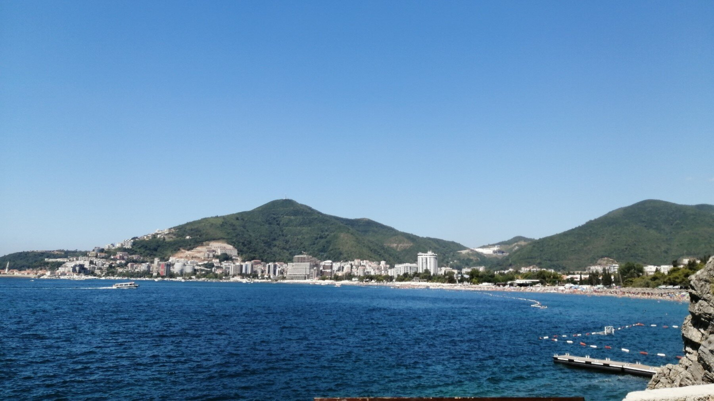
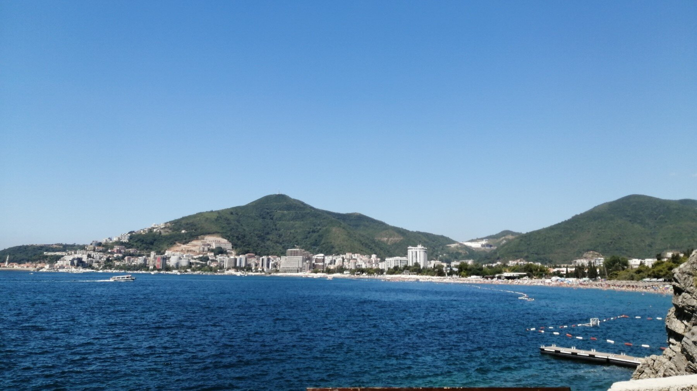

Budva, Montenegro
 

Boat trip
This trip is really dear to me because it's the first trip I took with my friends outside of Macedonia.
A lot of things happened on this trip, we visited a lot of cool places, went to a few parties, met some interesting people. My friend Bodan was kind of like a tour guide because he had visited Budva before, so we weren't
completely lost. Budva is a typical tourist city, and we had a lot of fun exploring it. Even though I can show you hundreds of photos from this trip, I will only share with you my most
memorable day. And that is the boat trip that we took.
Kotor
Kotor was the first stop on our boat trip, and I must say this was by far my favorite place that we visited on the whole trip.
The city is on a small hill and the center of the old part of the town is all covered in cobblestones. You can find cute little stores, like the one on the bottom, that
sell souvenirs for the tourists. All of the passages are really narrow, which I absolutely love.
And my personal favorite was the Kotor Bazaar that they had. You can also find souvenirs, clothes and basically anything that one tourist might want to take home.
Church of Our Lady